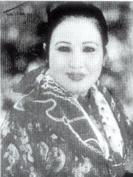
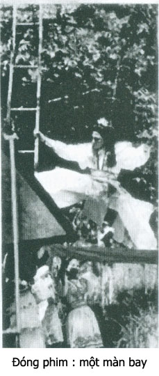
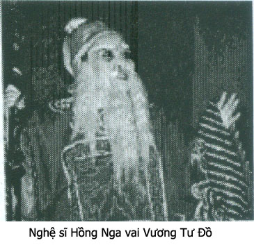

Trong các trạng hề, nữ quái, danh hài gái hiện nay Hồng Nga và Ngọc Giàu đứng đầu sổ là được nhiều khán giả ái mộ nhất. Cả hai đều thành công lớn trong mọi mặt ca, diễn, diễu trên sân khấu cải lương cũng như ở kịch nói hay phim vidéo.

Trong cuộc đời đi hát thì Hồng Nga chịu nhiều lao đao lận đận hơn các bạn đồng nghiệp. Hồng Nga theo nghề rất sớm, chị xin theo gánh hát, đã từng làm tì nữ, làm quân hầu, làm vũ nữ rồi học ca, và muốn diễn được chị đã từng làm việc cho các đào hát như thể người ở, giặt quần giặt áo, chăm sóc tủ làm tuồng cho đàn chị để được chỉ bảo vài điệu ca, lối diễn.
Nhắc đến Hồng Nga, có nhiều vai diễn để đời, nhưng có hai vai mà không ai hát hay hơn Hồng Nga, muốn bắt chước cũng không thể nào bắt chước được.
Năm 1962, sân khấu cải lương chạy theo tiểu thuyết kiếm hiệp, đưa tuồng chưởng lên sân khấu.
Nhân vật tuồng kiếm hiệp là những kiếm sĩ cô đơn, khung cảnh chung quanh là mưa gió bão bùng hay sa mạc khô cháy, họ đuổi theo những mối tình vời vợi như ảo ảnh. Khung cảnh lãng mạn trữ tình là những miếng đất dành cho những giọng ca ai oán não nùng. Hồng Nga có giọng ca trời cho, nên khi đoàn Dạ Lý Hương của Bầu Xuân dự định quay phim cải lương kiếm hiệp “Cô Gái Đồ Long” thì Hồng Nga được phân vai Kim Hoa Bà Bà, một vai có ca vọng cổ, phi thân và đánh chưởng.
Bầu Xuân rước thầy Tàu trong nhóm múa lân ở ngang rạp Thủ Đô về dạy đánh kiếm, đánh côn. Hồng Nga vai Kim Hoa Bà Bà, nên xử dụng cây côn đầu rồng, đánh với Hùng Cường (vai Trương Vô Kỵ) Khi tập thử thì không sao, đến khi ra sàn diễn thu hình thu thanh thiệt thì lần nào Hồng Nga cũng múa gậy phang ngang, trúng ống quyển của Hùng Cường. Anh nầy vừa đau vừa giận, bỏ về không thèm thu hình nữa. Bộ phim kéo dài nhiều ngày, đạo diễn Lê Hoàng Hoa và Bầu Xuân kêu trời vì sợ lỗ lã.
Cuối cùng đạo diễn Lê Hoàng Hoa bố trí cho vai Kim Hoa Bà Bà khi gặp Trương Vô Ky thì phóng ám khí rồi phi thân mất dạng. Chỉ gặp Chu Chỉ Nhược (Kim Ngọc thủ vai nầy) thì Hồng Nga Kim Hoa Bà Bà mới ca vọng cổ với Kim Ngọc Chu Chỉ Nhược.
Sắp xếp như vậy thì Hùng Cường chịu quay phim. Khung cảnh được chọn lựa là khu mộ của gia đình chú Hỏa ở đường đi Thủ Đức, nơi đó có nhiều cổ thụ, một nơi có thể căn giây cable để rút cho các tay kiếm sĩ bay, phi thân hoặc đánh chưởng.
Về phần kỹ thuật cột giây bay, cách kéo giây bay, tôi chịu trách nhiệm chỉ cho các anh dàn cảnh làm nên tôi tới điểm diễn trước để kiểm soát và cho một anh dàn cảnh “bay” thử để bảo đảm an toàn. Tới nơi thì tôi thấy Hùng Cường đã tới trước, đang chuyện trò vui vẻ với các anh dàn cảnh. Tôi yên chí là phen nầy sẽ thu hình được các phân đoạn có cảnh bay.
Bầu Xuân, đạo diễn Lê Hoàng Hoa và caméraman Đường Tuấn Ba tới quan sát coi ánh sáng buổi đó khi thu hình thì giây bay có lọt vào ống kính không?
Ông thầy Tàu dạy võ cùng tới một lượt với Kim Ngọc, Hồng Nga, Ngọc Giàu và Thanh Sang. Mọi người đã được hóa trang. Thanh Sang vai Tạ Tốn Kim Mao Sư Vương. Ngọc Giàu vai Triệu Minh.
Chúng tôi còn đứng giữa sân quay, dưới làn giây cable kéo bay vì mọi người cũng muốn quan sát khi bay thì sẽ bay từ đâu tới đâu. Hồng Nga hóa trang xong, đã mang bộ giây bay bên trong làn áo của Kim Hoa Bà Bà.
Anh chín Siểng xếp dàn cảnh đã móc giây cable vô móc sắt trên lưng Hồng Nga. Anh kéo nhẹ nhẹ thử coi giây móc chắc chưa.
Lê Hoàng Hoa đang cầm loa giải thích cho Kim Hoa Bà Bà và Trương Vô Ky nghe lớp đó diễn như thế nào, bất thình lình Hùng Cường la thật lớn: ” Bay!”. Mấy anh dàn cảnh tưởng là có lịnh đạo diễn, ba người nắm giây kéo một cái thật mạnh rồi họ chạy xa vô trong để kéo Kim Hoa Bà Bà bay lên cổ thụ.
Hồng Nga đang đứng lắng nghe giải thích của đạo diễn, bỗng bị giựt bay vút lên trời, hết hồn la “Úy chết mẹ tôi rồi”

Cô sợ quá, “Tè” ra ướt quần. Cô bay ngang qua đầu Lê Hoàng Hoa, Bầu Xuân, ông thầy Tàu và các bạn Thanh Sang Ngọc Giàu, Kim Ngọc …
Nước…như mưa, khai mùi ạt-mô-nhắc rưới dài theo giây bay. Mọi người lấy tay che đầu, chạy tán loạn tránh cơn mưa “nước tè” đó.
Hồng Nga khóc ồ ồ trong khi mọi người ôm bụng lăn ra mà cười!
Hùng Cường khoái chí vì chơi Hồng Nga một vố đau, trả được cái thù Hồng Nga phang gậy vô chân anh ta. Hùng Cường còn chạy tới, biểu Bầu Xuân đưa đầu cho anh ta ngửi thử coi có được xức dầu thơm của Hồng Nga không.
Bầu Xuân cái mặt xanh dờn, vừa tức cười vừa tức giận, ông ta không dám cự Hùng cường vì Hùng Cường đang là kép ăn khách nhất của đoàn. Ông nói:
– Hùng Cường lại dỗ Hồng Nga đi, cổ khóc một hồi khan tiếng, hết ca vọng cổ đó.
Hồng Nga vừa khóc vừa cười, nói:
– Để tôi thay cái quần đã rồi quay tiếp. Thằng cha Trương Vô Kỵ tới là tôi đá...cái hộc máu.
Đây là vai tuồng “Làm mưa” độc đáo của Hồng Nga mà không ai bắt chước được.
Vai tuồng để đời: Hồng Nga trong vai cố mẫu.
Tôi đã xem Hồng Nga diễn rất nhiều vai trên sân khấu Dạ Lý Hương, trên truyền hình và sau nầy trên các băng vidéo. Hồng Nga là diễn viên “đa năng, đa diện”. Cô đóng các vai đào mùi, đào lẳng, đào độc, mụ mùi, vai Hoàng Hậu, võ tướng đều giỏi. Sau nầy diễn nữ hề, giựt giải “Cù Nèo Vàng”, giải “Những nữ hề hay nhất.Tuy nhiên chỉ có một vai mà chưa ai thay thế bằng, đó là vai bà cố mẫu trong tuồng Dương Vân Nga của Hoa Phượng.
Cốt truyện tuồng lớp đó như sau:
Bà cố mẫu Hồng Nga đang nghe lời xúc xiểm của Đinh Điền, Nguyễn Bặc, sợ Dương Vân Nga trao quyền cho Lê Hoàng, đưa giang sơn cho giòng họ khác. Bà rất tức giận. Tì nữ dâng trà thì Dương Vân Nga tới. Bà cố mẫu (Hồng Nga) từ từ quay lại, bưng tách nước đổ xuống nền đá. Dương Vân Nga sửng sốt.

Bà cố mẫu Hồng Nga nhìn theo những giọt nước vừa đổ xuống, cất giọng lạnh như băng:
“Nước đã đổ rồi, có hốt lại được đâu. Hẳn là con dâu của mẹ cũng nghe qua lời xưa tích cũ. Kìa… nước thấm thềm hoa, nước đi vào lòng đất để tìm lại gốc cũ người xưa. Con ôi, nguồn cội họ Đinh, xuất phát từ nơi mẹ vừa đổ nước. Trên mảnh đất ướt mà mẹ con ta đang đối mặt nhìn nhau. Nơi đây bây giờ cửa cuốn rèm che, chớ trước kia là hang sâu động thẳm, nơi mà người mẹ góa đầu đội mưa nguồn, chân leo dốc vắng, tháng ngày lặng lẽ, thắt lưng buộc bụng lầm lũi nuôi con cho đến khi con khôn lớn nên…
(Vọng cổ)…Người… Chung quanh ta xưa kia hoa lau san sát non ngàn. Nhớ thuở thằng bé bẻ lau làm cờ tập trận. Trâu thả lưng đèo, vắt vẻo tiếng sáo khuya, chỗ nầy xưa kia chỉ là mái tranh nghèo, gió lùa vách núi từng cơn, mẹ góa con côi, sống kiếp mục đồng, học điều nhân nghĩa…”
Lối diễn của Hồng Nga rất cô đọng, súc tích. Sân khấu lặng trang, khán giả nín thở theo từng câu ca, từng hơi thở của Hồng Nga và bị cuốn hút vào cái cổ kính trang nghiêm của một thời lịch sử xa xưa. Tôi thấy sau câu Hồng Nga ca, cả rạp hát bùng nổ những tràng pháo tay như mọi người chợt tỉnh sau một cơn xúc động sâu xa. Tôi nghe lại băng vidéo để ghi lại câu ca nầy của Hồng Nga,tôi vẫn cảm thấy còn xúc động bàng hoàng như đang ngồi giữa rạp hát, lắng nghe giọng ca vàng và điệu hát quyến rũ của Hồng Nga.
Một vai để đời…một vai không ai thay thế được của Hồng Nga.